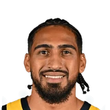

Callie Caplan:Luka Doncic on seeing other NBA players wearing his Luka 1s to start this season:
“It’s amazing. It’s unbelievable. I think I saw Obi [Toppin] wearing them first game. It’s just a pleasure.”

6 quotes about Obi Toppin from 6 players, coaches and executives, newest first. Each one links to its original source.
Callie Caplan:Luka Doncic on seeing other NBA players wearing his Luka 1s to start this season:
“It’s amazing. It’s unbelievable. I think I saw Obi [Toppin] wearing them first game. It’s just a pleasure.”
RJ Barrett on Obi Toppin:
“We work out at the same time every day, so I've really been connected with him. Great dude. And he's a hard worker for sure. Very talented, very athletic, very versatile, so I'm excited to have him on our team and I feel like we'll play well together.”
Holmes told The Athletic.
“And we were looking at Obi (Toppin)’s team in 2019-20, and the way they played, the style of play. Obviously, Obi played a big factor in it. So we actually reached out to Dayton, Coach (Lynn) Greer talked to the coaching staff, and thankfully they were able to give me an offer.”
Tom Thibodeau on Obi Toppin, who he coached for years:
“He runs the floor, he’s a great athlete. Very gifted scorer. He can shoot, put it on the floor. Super quick.”
“Toppin had a hell of a series overall... TJ is just a pain in the a*s. He just really is. He didn't do great offensively... but he was just this pest defensively.”
Holmes told The Athletic.
“And we were looking at Obi (Toppin)’s team in 2019-20, and the way they played, the style of play. Obviously, Obi played a big factor in it. So we actually reached out to Dayton, Coach (Lynn) Greer talked to the coaching staff, and thankfully they were able to give me an offer.”
Callie Caplan:Luka Doncic on seeing other NBA players wearing his Luka 1s to start this season:
“It’s amazing. It’s unbelievable. I think I saw Obi [Toppin] wearing them first game. It’s just a pleasure.”
#PistonsDwane Casey on #Knicks Obi Toppin:
“I like him. As a Kentucky guy, he reminds of Kenny Walker...our need was in a different (position).”
RJ Barrett on Obi Toppin:
“We work out at the same time every day, so I've really been connected with him. Great dude. And he's a hard worker for sure. Very talented, very athletic, very versatile, so I'm excited to have him on our team and I feel like we'll play well together.”